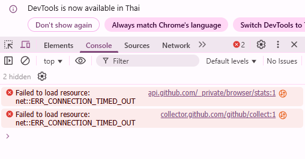

เมื่อสิ่งต่างๆ ไม่เป็นใจ: การใช้ Console (F12)
มาเรียนรู้เครื่องมือของนักพัฒนาเว็บ ที่จะช่วยให้เราเห็น "เบื้องหลัง" การทำงานของหน้าเว็บ
วิธีการสืบสวน (Frontend):
- เปิด Web App ของเราในเบราว์เซอร์
- กดปุ่ม F12 (หรือ `Ctrl+Shift+I` / `Cmd+Opt+I`) เพื่อเปิด Developer Tools
- คลิกที่แท็บ "Console"
- ข้อความ Error ที่เป็นสีแดง (Red Text) คือ "เบาะแส" ที่บอกเราว่าโค้ด JavaScript ผิดพลาดตรงไหน
